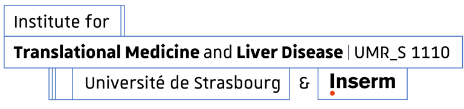

HistoGraph comprises the following computer science partners:

ICube brings together expertise in the fields of image processing, image information extraction, data mining, and knowledge management. The SDC research team has extensive experience in unsupervised learning, image segmentation, medical data analysis with DL, and multimodal data analysis. HistoGraph’s principal investigator is Prof. Thomas Lampert, who held the Chair of Data Science and AI at ICube and since was appointed professor of computer science. His work focuses on machine learning for image and time-series analysis, specifically semi-supervised clustering and unsupervised and semi-supervised DL approaches to learn domain invariant generalisable representations. He is an alumnus of the US State Department's International Vice Leadership Program for AI, and an expert on AI for the Council of Europe. Apart from his academic background, he has experience managing industrial research projects and consultancy roles.

DaSciM team, led by Prof. Michalis Vazirgiannis, develops ML and DL approaches to solve real-world problems, with focus on graph analysis approaches and text mining. The group has a track record of successful academic and industrial collaborations attracting funding from partners such as LVMH, BNP, AIRBUS, Google, Microsoft, etc. as well the French government. J. Lutzeyer plays an important role in the contributions of the DaScIM team to the state-of-the-art in graph representation learning.

IHU has experts in ML and DL applied to medical image analysis and surgical video analysis, feature engineering, explainable ML approaches, multi-modal data fusion and exploiting eye-tracking information. Its work is published in the leading ML and medical image analysis venues and contains vast experience in ANR and European projects.
and its developments are guided by the following medical institutes:
